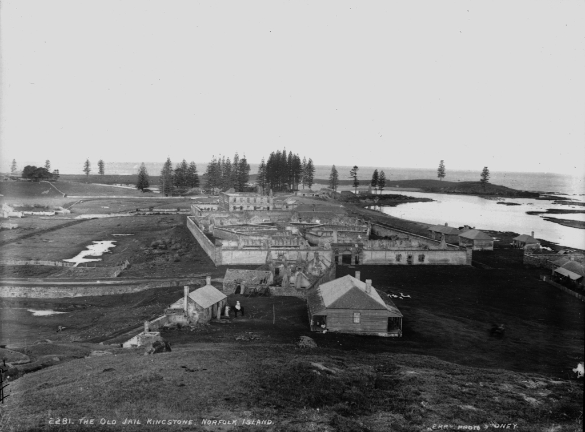

History of the Norfolk Island

The first European settlement
Discovered by Captain James Cook RN in 1774, Norfolk Island was settled on 6 March 1788, six weeks after the First Fleet landed in Sydney. Cook reported the island had rich soils, tall pines suitable for ships masts and spars, and native flax that could be used for making canvas. Governor Philip had instructions to settle and secure the island as soon as possible to secure its potential naval supplies.
Arriving on the Supply, Lieutenant Philip Gidley King RN and a party of nine male and six female convicts and seven staff established a settlement named Kingston. Crops were sown in the adjoining valley, Arthurs Vale, and, unlike the experience in Sydney, the Kingston crops flourished. To relieve the food pressures in the infant colony of New South Wales, Governor Philip relocated around one-third Sydney's population to Kingston.
Extensive clearing followed and both convicts and free settlers farmed small holdings of land. The rising land behind Kingston was cleared for surveillance and to ensure there was no cover for escaping convicts. The first settlement's population peaked at 1156 in May 1792. By 1804 the free settlers on the island significantly outnumbered the convicts who represented 23 percent of the total population of 1084. On its abandonment in 1814 the settlement's buildings were destroyed.
The second settlement
In response to the report by Commissioner Bigge (1822-23) on the effectiveness of transportation, the Colonial Secretary Lord Bathurst instructed Governor Brisbane in 1824 to re-occupy the island as a 'great hulk or penitentiary' to provide secondary punishment. Secondary punishment was designed to revive the fear of transportation and deter crime in Britain and the colonies, and was a sentence applied to transported convicts who re-offended in the colony.
Norfolk Island was re-occupied on 6 June 1825 by Captain Turton as commandant, with a party of 50 soldiers, 57 convicts, six women and six children. The settlement was again located around Kingston and the remains of some first settlement buildings were rebuilt, old agricultural areas rehabilitated and new areas cleared. But it was to be of an entirely different character to the first settlement.
The second settlement on Norfolk Island was designed to be the extreme in convict degradation and the came to stand for worst of the transportation system.

A new prison philosophy
Only one commandant of Norfolk Island, Alexander Maconochie, brought a humanising regime of reform to the second settlement period through four of its 30 years. He introduced the Merits System of Penal Discipline, which worked on the principle that the prisoner could secure freedom if they were industrious and well behaved. For a number of reasons, including the fact that his superiors disapproved of his reformist actions, his reforms failed. Under Maconochie's humanitarian influence the conditions for prisoners had improved. They rapidly deteriorated, however, under the next commandant, Major Joseph Childs.

Third settlement
As the Pitcairn Island descendents of the Bounty mutineers had outgrown their island home, the British government chose to resettle them on Norfolk Island. The whole Pitcairn community landed at Kingston Pier on 8 June 1856.
Their descendents, who today comprise nearly a third of Norfolk Island's population, still speak the Pitcairn language. For them KAVHA is a place of special significance because it has been continually and actively used since their arrival as a place of residence, work, worship and recreation. KAVHA is uncommon as a place where a distinctive Polynesian/European community has lived and practised their cultural traditions for over 150 years.